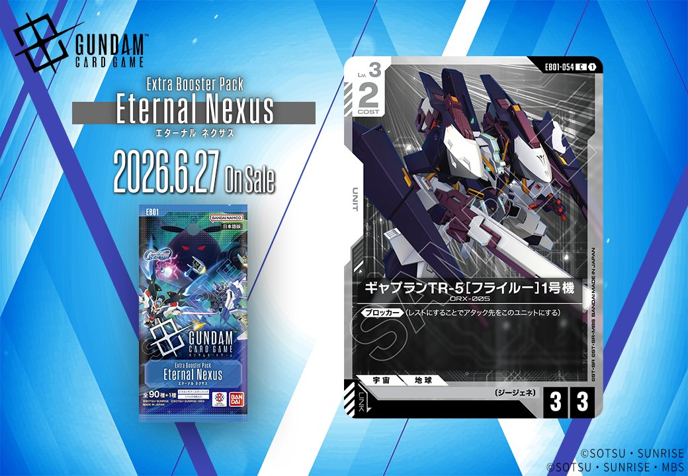
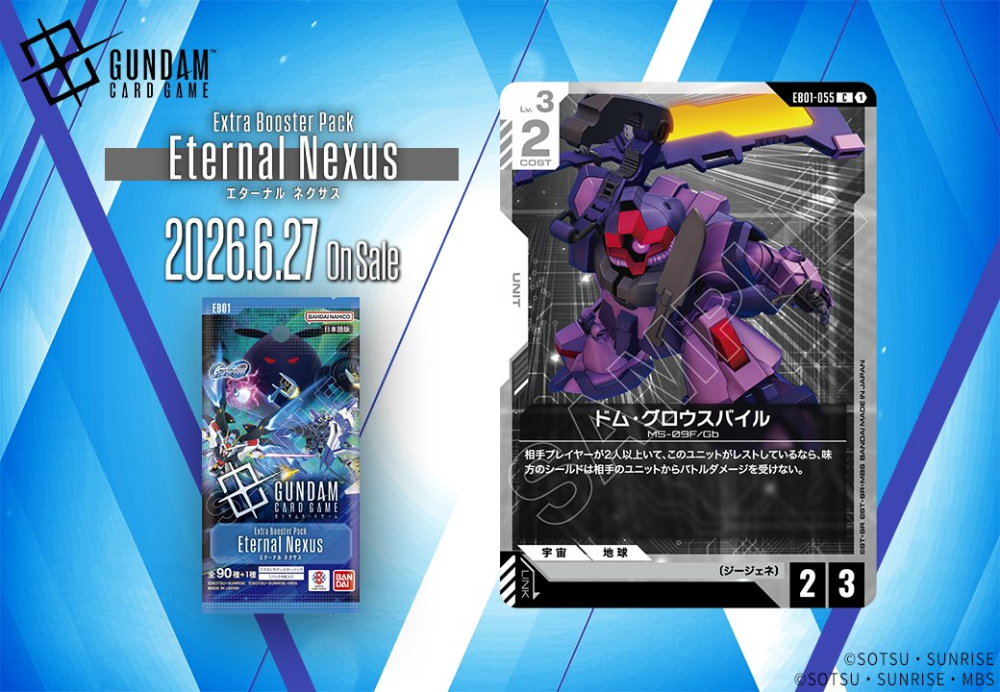

2026年6月27日発売のエクスパンションブースター第1弾「Eternal Nexus」より、白のUNIT「ギャプランTR-5〔フライルー〕1号機」と紫のUNIT「ドム・グロウスバイル」の2枚が収録されます。

ギャプランTR-5〔フライルー〕1号機 (EB01-054)
| 色 | 白 | タイプ | UNIT |
| Lv | 3 | コスト | 2 |
| AP | 3 | HP | 3 |
| 特徴 | 〔ジージェネ〕 | ||
効果: 《ブロッカー》(レストにすることでアタック先をこのユニットにする)
ギャプランTR-5〔フライルー〕1号機は、コスト2でAP3/HP3の標準的なステータスに《ブロッカー》を持つ白のLv.3ユニット。同じ〔ジージェネ〕特徴を持つ30cm砲(APFSDS弾)は《ブロッカー》持ちユニットをアクティブにする効果があるため、このカードをブロッカーとして複数回使い回せる可能性がある。ただし30cm砲の効果でアクティブになったユニットはそのターン中アタックできないため、防御特化の運用が前提となる。


ドム・グロウスバイル (EB01-055)
| 色 | 紫 | タイプ | UNIT |
| Lv | 3 | コスト | 2 |
| AP | 2 | HP | 3 |
| 特徴 | 〔ジージェネ〕 | ||
効果: 相手プレイヤーが2人以上いて、このユニットがレストしているなら、味方のシールドは相手のユニットからバトルダメージを受けない。
ドム・グロウスバイルは、多人数戦で真価を発揮する防御特化ユニットです。レスト状態で味方シールドへのバトルダメージを完全に防ぐ効果は、バトルロワイヤルやチーム戦において味方全体を守る強力な盾となります。COST2でAP2/HP3という標準的なステータスを持ちながら、相手が複数いる状況では実質的に味方の生存力を大幅に向上させる、多人数戦環境での採用価値が高い一枚です。
関連カード
-
 30cm砲(APFSDS弾)(EB01-084)NEW白系 — 同色・共通特徴: ジージェネ（新カード）
30cm砲(APFSDS弾)(EB01-084)NEW白系 — 同色・共通特徴: ジージェネ（新カード） -
 ヒルドルブ(EB01-052)NEW白系 — 同色・共通特徴: ジージェネ（新カード）
ヒルドルブ(EB01-052)NEW白系 — 同色・共通特徴: ジージェネ（新カード） -
 溢れる慈愛(GD01-118)白系デッキ内採用率39.6% (1260デッキ)
溢れる慈愛(GD01-118)白系デッキ内採用率39.6% (1260デッキ) -
 ガンダム・ルブリス(GD01-086)白系デッキ内採用率37.3% (1186デッキ)
ガンダム・ルブリス(GD01-086)白系デッキ内採用率37.3% (1186デッキ) -
 エールストライクガンダム(ST04-001)白系デッキ内採用率35.7% (1136デッキ)
エールストライクガンダム(ST04-001)白系デッキ内採用率35.7% (1136デッキ) -
 三日月・オーガス(ST05-010)紫系デッキ内採用率37.3% (1187デッキ)
三日月・オーガス(ST05-010)紫系デッキ内採用率37.3% (1187デッキ) -
 ガンダム・バルバトスアダプト(GD03-056)紫系デッキ内採用率37.3% (1185デッキ)
ガンダム・バルバトスアダプト(GD03-056)紫系デッキ内採用率37.3% (1185デッキ) -
 ガンダム・バルバトス（第1形態）(GD02-054)紫系デッキ内採用率36.6% (1165デッキ)
ガンダム・バルバトス（第1形態）(GD02-054)紫系デッキ内採用率36.6% (1165デッキ) -
 グレイズ改(ST05-004)紫系デッキ内採用率33.7% (1073デッキ)
グレイズ改(ST05-004)紫系デッキ内採用率33.7% (1073デッキ) -
 百錬(ST05-006)紫系デッキ内採用率33.6% (1070デッキ)
百錬(ST05-006)紫系デッキ内採用率33.6% (1070デッキ)